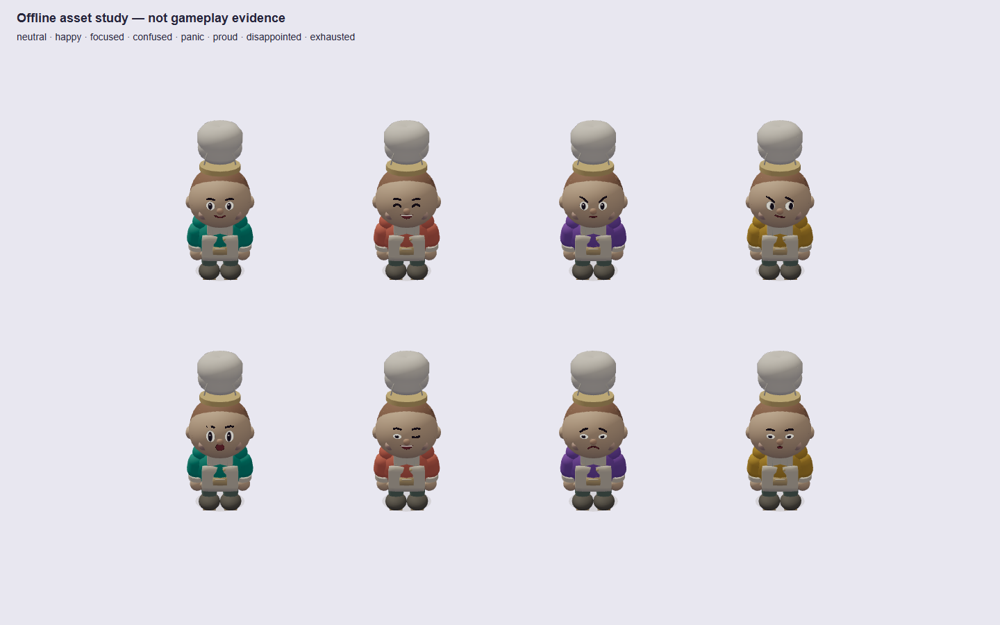
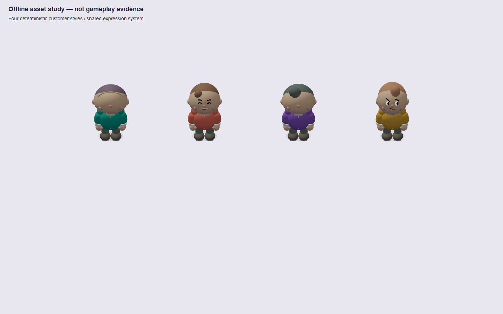
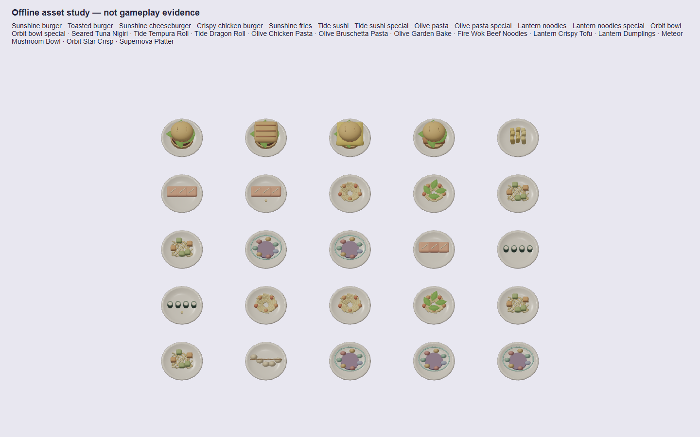

Real production-browser kitchen screenshots. Left: fresh Pass 1 baseline; right: Pass 2. Balanced, Reduced Motion, same first restaurant level/viewport/camera. Chromium SwiftShader is not iPhone/Safari evidence or a mobile GPU benchmark.
Open before at full size · Open after at full size
These inspection sheets use the same chef/customer/food functions as the live game. They do not invent server snapshots or establish a cooking/multiplayer victory. A controlled matching pre-change face/equipment/25-dish study was not captured.



Tests, render cost and iPhone check · Internal quality assessment and missing work · Character handoff